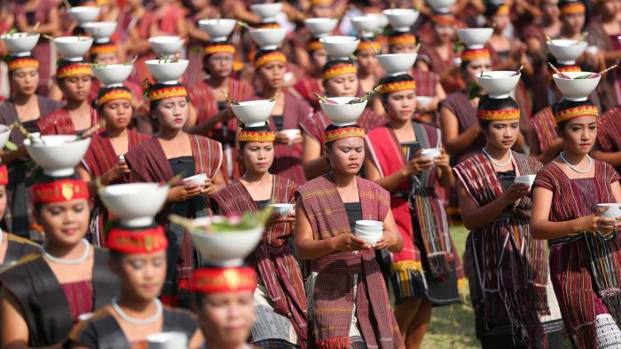
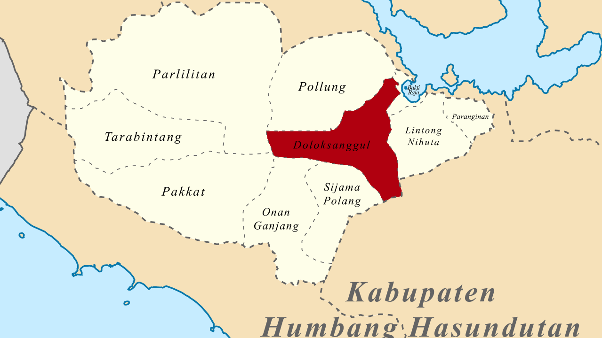
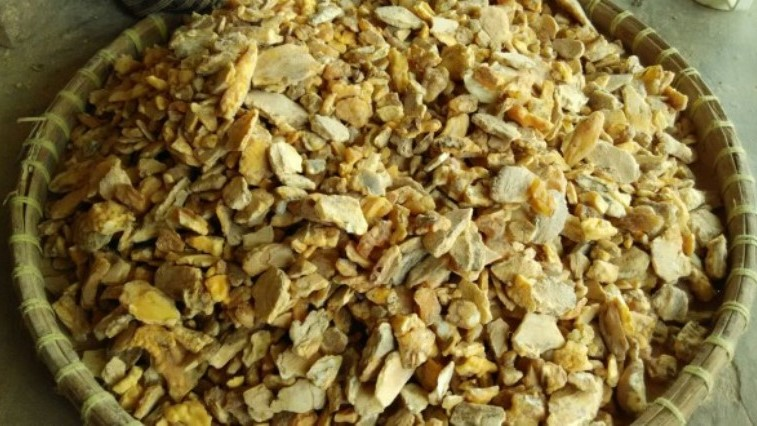
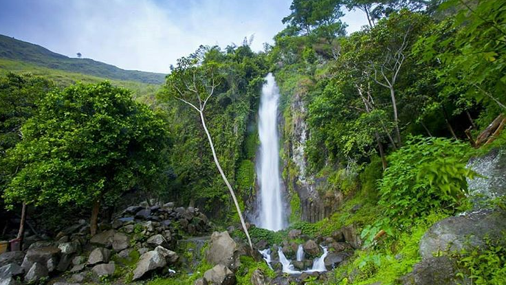

Demografi

Mayoritas suku yang ada di masyarakat Dolok Sanggul adalah Batak, dan hampir seluruh
warganya adalah etnik Batak Toba yang memakai sistem Marga sebagai nama keluarga.
Marga yang mayoritas di Dolok Sanggul adalah Simamora, Purba, Lumban Gaol, Lumban Raja, Simanullang,
Marbun, Nababan, Sianturi, Sihite, Sihotang, Sihombing, dan Situmorang.
Doloksanggul bisa dikatakan kota dengan perkembangan sangat cepat dibanding kabupaten lain yang sama
dimekarkan.
Bicara pekerjaan yang digeluti, warga Doloksanggul kebanyakan bertani dan masih sangat kental adat
batak yang masih tampak di tiap sudut kehidupan warga.
Agama yang dianut masyarakat Dolok Sanggul mayoritas beragama Kristen Protestan. Data dari BPS tahun
2010, yang beragama Kristen Protestan 90.29%, kemudian Katolik 5.54%, dan Islam 3.61%[1].
Geografi

Kota Doloksanggul mempunyai sungai yang melewati Kota Doloksanggul yaitu sungai kecil
yang namanya Aek Sibundong.
Sungai ini terkenal dan sering disebut sebut orang misalnya pada sebuah lagu yaitu "Aek Sibundong"
memang dulunya sungai ini sangat bersih dan cantik.
Tapi, sekarang karena ada pencemaran dari kota, kotoran dari kota semua terbuang ke Sungai aek
sibundong ini, tepatnya di Jl. Sisingamangaraja dan Jl. G. A. Letkol Manullang,
pencemaran ini sangat disayangkan, karena semua yang ada di lagu jadi seperti bualan saja, seperti
dalam lirik "Oh aek sibundong aek sibundong dana uli",
artinya air sibundong yang indah cantik.
Ekonomi

Pertumbuhan ekonomi hanya mengandalkan pertanian.
Pertanian yang paling berkembang terdapat di desa Siborboron, Kecamatan Sijamapolang yang tepatnya
diperbatasan antara Kecamatan Doloksanggul dan Onan Ganjang.
Jenis tanaman yang dikembangkan disana kebanyakan holtikultura seperti cabai, tomat, sayur mayur dan
lain lain, sedangkan tanaman tua yaitu jeruk.
Wisata

Wisata di Kota Doloksanggul, di Kecamatan Baktiraja karena memang pinggiran danau toba
dan warga kota
berwisata ke Bakkara yang di mana memang asal pahlawan nasional Batak yaitu Sisingamangaraja XII dan
istana mungilnya.
Jika dikembangkan wisata BAKKARA sangatlah menarik di mana terdapat air terjun dan pemandangan yang
sangat mengagumkan karena terdapat pulau kecil yaitu pulau Simamora.